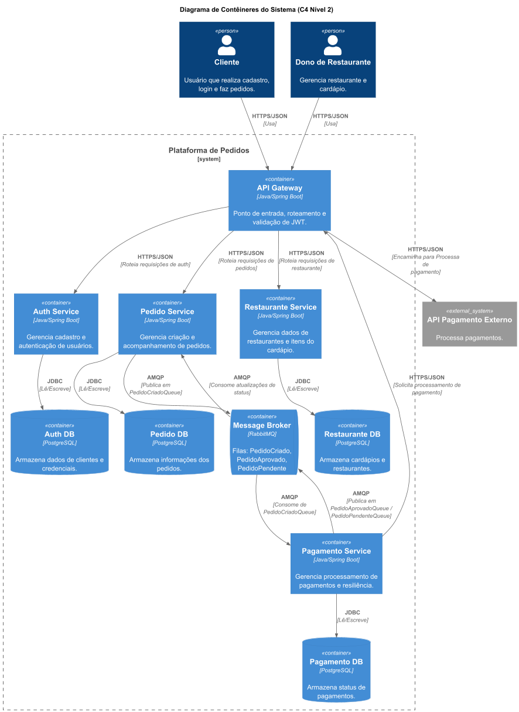
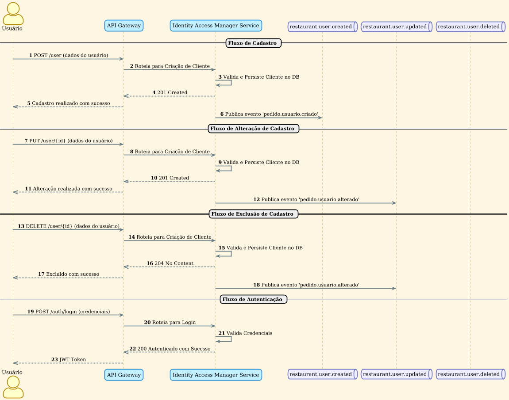
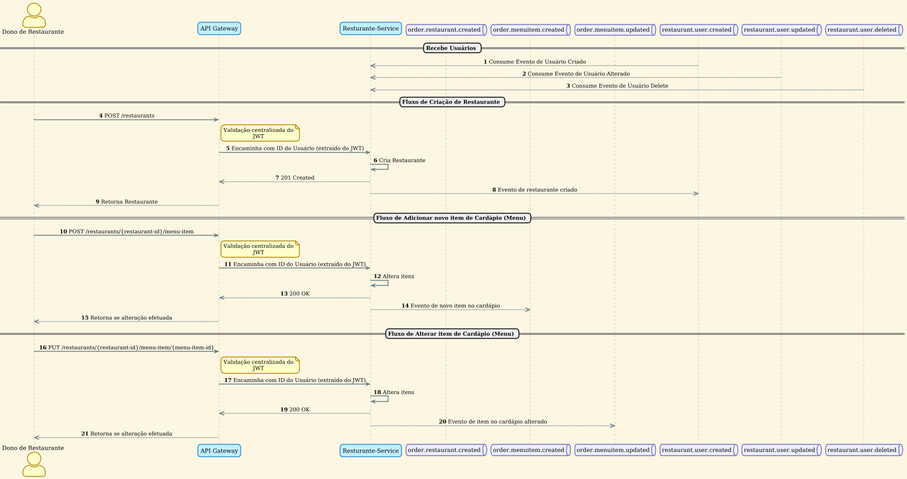
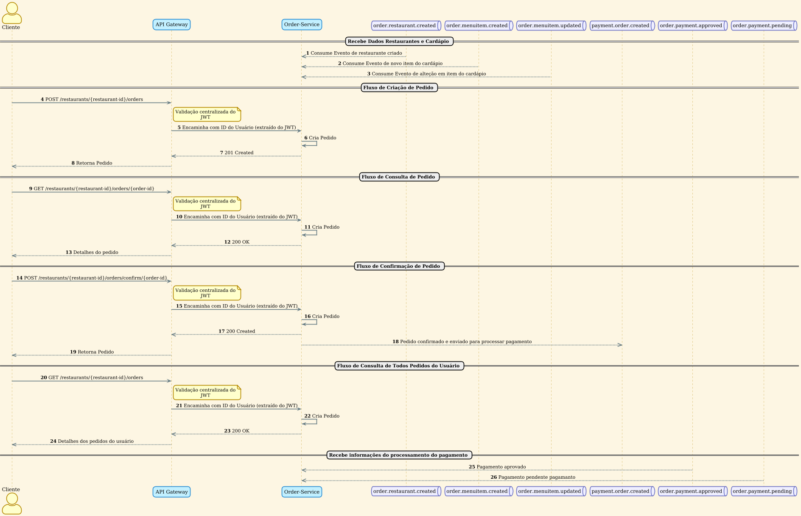
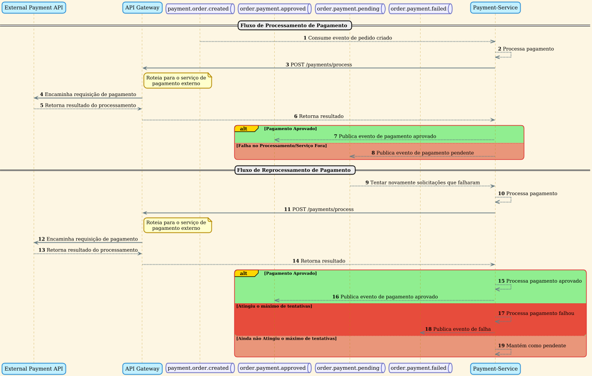

Curso: Pós-Graduação em Arquitetura e Desenvolvimento em JAVA
Projeto: Tech Challenge - Sistema de Gerenciamento de Restaurantes
| Nome | RM | |
|---|---|---|
| Alexandre Belisário Duarte Leite de Andrade | RM367163 | alexbdla@gmail.com |
| Kervin Sama Candido da Silva | RM367345 | kervincandido@gmail.com |
Este documento apresenta a solução técnica desenvolvida para o Tech Challenge, que consiste em um sistema de autogerenciamento de pedidos para uma rede de restaurantes. A solução foi projetada com base em uma arquitetura de microserviços, visando alta escalabilidade, resiliência e manutenibilidade.
O sistema permite cadastrar os clientes, fazer pedidos, acompanhar o status e realizar o pagamento de forma totalmente digital. Do lado do restaurante, a plataforma oferece ferramentas para o gerenciamento de cardápios e o recebimento de pedidos.
A arquitetura do sistema é fundamentada em princípios de microserviços, com cada serviço sendo responsável por uma funcionalidade de negócio específica. A comunicação com os componentes é orquestrada por um API Gateway e um sistema de mensageria, garantindo desacoplamento e flexibilidade.
A seguir, são apresentados os diagramas que ilustram a interação entre os componentes em diferentes cenários de uso.
O diagrama abaixo oferece uma visão macro da arquitetura, mostrando os principais contêineres e suas interações.

A arquitetura representada no modelo C4 descreve uma plataforma de pedidos baseada em múltiplos microserviços independentes, cada um com responsabilidade de negócio própria e banco de dados isolado. Os atores centrais são o Cliente, que realiza autenticação e pedidos, e o Dono de Restaurante, que gerencia restaurante e cardápio. O ecossistema ainda interage com uma API de Pagamento Externo, tratada como dependência de terceiros.
Na visão macro, o API Gateway atua como ponto de entrada único para as requisições externas, enquanto os serviços Auth/IAM, Restaurant, Order e Payment operam como bounded contexts separados. O RabbitMQ sustenta a comunicação assíncrona entre os serviços, e cada microserviço possui sua própria instância de PostgreSQL, reforçando autonomia de dados e baixo acoplamento.
O fluxo principal apresentado pelo diagrama mostra que, após a criação e confirmação de um pedido, o Order Service publica o evento de pedido criado; o Payment Service consome esse evento, aciona o processador externo de pagamento e, conforme o resultado, publica eventos de aprovação ou pendência; por fim, o Order Service consome esses eventos para atualizar automaticamente o estado do pedido.
Este fluxo descreve como um usuário se cadastra e se autentica no sistema.

O fluxo de IAM cobre cadastro, alteração cadastral, exclusão e autenticação. No cadastro, o usuário envia uma requisição POST /user, o gateway encaminha a chamada ao serviço de identidade e, após validação e persistência, o sistema retorna sucesso e publica um evento de criação de usuário para sincronização com outros serviços.
No fluxo de atualização cadastral, o usuário realiza uma requisição PUT /user/{id}; o serviço valida e persiste os novos dados e, em seguida, publica um evento de atualização. De modo semelhante, no fluxo de exclusão, a operação DELETE /user/{id} remove o cadastro e publica um evento de remoção, preservando a sincronização dos demais bounded contexts.
Para autenticação, o usuário informa suas credenciais, o serviço valida usuário e senha e retorna um JWT, posteriormente utilizado para acesso aos endpoints protegidos do ecossistema. Esse fluxo é a base para garantir que o identificador do cliente seja extraído do token nas operações de pedido.
Este fluxo mostra como um proprietário gerencia as informações de seu restaurante e cardápio.

O fluxo de restaurante mostra, primeiro, a sincronização de usuários vindos do IAM, permitindo que o serviço de restaurantes mantenha uma projeção local de proprietários e usuários autorizados. Em seguida, o proprietário cria um restaurante por meio de POST /restaurants, com o JWT validado e o identificador do usuário extraído do token.
Após a criação do restaurante, o serviço persiste os dados e publica um evento de restaurante criado, permitindo que outros serviços consumam essa informação. O mesmo padrão é aplicado para o cardápio: ao adicionar um item, o serviço registra o novo menu item e publica o evento correspondente; ao atualizar um item, persiste a alteração e propaga um novo evento assíncrono.
Esse desenho sustenta o papel do restaurant-service como fonte de verdade para restaurante e catálogo, ao mesmo tempo em que permite ao order-service manter uma projeção local do cardápio sem acoplamento síncrono forte.
Este diagrama detalha o ciclo de vida de um pedido, desde a criação até a notificação para pagamento.

O fluxo de pedidos inicia com a sincronização assíncrona de restaurantes e itens de cardápio publicados pelo restaurant-service. Em seguida, quando o cliente cria um pedido por POST /restaurants/{restaurant-id}/orders, o gateway encaminha a chamada, o serviço extrai o ID do usuário do JWT, valida os itens selecionados e persiste um pedido inicialmente em estado de rascunho.
O cliente pode consultar um pedido específico ou listar seus pedidos anteriores por meio dos endpoints de consulta. Após revisar o conteúdo, o cliente confirma o pedido via POST /restaurants/{restaurant-id}/orders/confirm/{order-id}. Nesse momento, o order-service muda o estado do pedido e publica o evento pedido.criado, iniciando o fluxo financeiro.
Depois disso, o serviço passa a receber eventos de status de pagamento. Quando um evento de aprovação é consumido, o pedido é atualizado para pago; quando um evento de pendência é consumido, o pedido é atualizado para pagamento pendente. Essa atualização automática garante aderência ao requisito de sincronização assíncrona do status do pedido.
Este fluxo ilustra como o pagamento é processado de forma assíncrona e resiliente.

O fluxo principal de pagamento começa quando o payment-service consome o evento de pedido criado. A partir desse ponto, o serviço tenta processar o pagamento junto ao processador externo, utilizando integração HTTP encapsulada e protegida por mecanismos de resiliência.
Se o pagamento for aprovado, o serviço publica um evento de pagamento aprovado. Se houver indisponibilidade, timeout, circuito aberto ou outra falha transitória, o pagamento é mantido em estado pendente, um evento de pagamento pendente é publicado e a requisição é preservada para reprocessamento automático posterior.
O diagrama também evidencia a etapa de reprocessamento: pagamentos pendentes são reenviados automaticamente quando o serviço externo volta a responder. Caso uma nova tentativa seja bem-sucedida, o serviço publica aprovação; caso o limite de tentativas seja atingido, o sistema registra falha definitiva e publica um evento adicional de falha, ampliando a observabilidade do fluxo.
Além dos diagramas apresentados, o projeto foi consolidado em cinco blocos técnicos complementares: System Infra / Kong Gateway, Identity and Access Management (IAM), Restaurant Service, Order Service e Payment Service. O objetivo desta subseção é detalhar responsabilidades, decisões arquiteturais, mecanismos de integração e aderência aos requisitos do Tech Challenge.
A camada de infraestrutura comum foi projetada para subir todo o ecossistema em um único comando, utilizando Docker Compose, RabbitMQ, instâncias isoladas de PostgreSQL, Kong como API Gateway e o processador externo procpag. Esse arranjo materializa a arquitetura distribuída exigida pela fase e torna a execução local mais previsível e reprodutível.
O Kong opera em modo DB-less e foi configurado para atuar como ponto central de entrada e roteamento das chamadas externas. Ele encaminha rotas do IAM, restaurante, pedidos e integração com o processador externo de pagamento. Na solução atual, porém, o gateway é usado principalmente para roteamento e exposição das rotas, enquanto a validação JWT e as regras de autorização permanecem majoritariamente implementadas nos próprios microserviços.
A infraestrutura também reforça o isolamento por serviço, pois cada bounded context mantém sua própria base PostgreSQL. Em paralelo, o RabbitMQ sustenta a comunicação assíncrona entre os serviços internos, compondo a espinha dorsal do fluxo distribuído de pedidos e pagamentos.
O serviço de Identity and Access Management (IAM) é responsável pelo ciclo de vida da identidade dos usuários na plataforma. Seu escopo abrange autenticação, autorização, cadastro e manutenção de usuários, administração de tipos de usuário e perfis de acesso, além da emissão de tokens JWT consumidos pelos demais serviços.
Arquiteturalmente, o IAM adota uma separação consistente entre controladores, casos de uso, domínio e infraestrutura. O fluxo de autenticação foi implementado com Spring Security, BCrypt e JWT assinado por chave RSA, permitindo que o subject do token carregue o identificador do usuário. Esse desenho é central para o requisito de que o ID do cliente venha do próprio JWT nas operações protegidas.
Além de autenticar, o serviço também participa da comunicação assíncrona do ecossistema: ao criar, atualizar ou excluir usuários, publica eventos para que outros bounded contexts mantenham suas projeções locais sincronizadas, reduzindo acoplamento síncrono com o serviço de identidade.
O restaurant-service representa o bounded context do estabelecimento e do catálogo. Ele concentra regras de negócio relacionadas ao cadastro e manutenção de restaurantes, itens de cardápio, horários de funcionamento e vínculo entre restaurante e usuário autorizado para gestão.
O domínio valida informações essenciais do restaurante e do cardápio, enquanto a camada de aplicação controla o acesso do proprietário ou usuário autorizado às operações de gestão. O serviço também consome eventos do IAM para manter uma projeção local de usuários, o que permite validar permissões de negócio sem depender de chamadas síncronas ao serviço de identidade em cada operação.
Em complemento, o serviço publica eventos de criação e atualização de restaurante e menu item, permitindo que o order-service mantenha uma visão local do catálogo necessária à criação de pedidos, sem acoplamento forte no momento da consulta.
O order-service é o núcleo de orquestração do ciclo de vida dos pedidos. Ele recebe a criação do pedido, valida itens a partir da projeção local do cardápio, associa o pedido ao usuário autenticado, calcula o valor total e persiste o agregado inicialmente em estado de rascunho, aguardando confirmação explícita do cliente.
Após a confirmação, o serviço muda o estado do pedido e publica o evento pedido.criado, iniciando o fluxo de pagamento de forma assíncrona. Posteriormente, o mesmo serviço consome os eventos de pagamento.aprovado e pagamento.pendente, atualizando automaticamente o status do pedido sem necessidade de acoplamento síncrono com o serviço financeiro.
Essa combinação de criação, confirmação, publicação de evento e atualização assíncrona de estado coloca o order-service no centro do fluxo principal exigido pela fase.
O payment-service é o microserviço responsável por processar pagamentos no ecossistema distribuído do projeto. Ele consome o evento de pedido criado, integra-se ao processador externo fornecido para a disciplina, persiste o estado transacional do pagamento e publica eventos de saída para que os demais serviços atualizem o ciclo de vida do pedido.
Do ponto de vista arquitetural, o serviço foi estruturado com base em princípios de Clean Architecture, com separação clara entre domínio, casos de uso e infraestrutura, além de gateways específicos para persistência, mensageria, observabilidade e integração externa. A estratégia de idempotência foi implementada em duas camadas: controle por messageId e unicidade por orderId, reduzindo o risco de reprocessamentos duplicados em cenários de reentrega ou concorrência.
Na borda externa, a chamada ao processador é protegida por Retry, Circuit Breaker, TimeLimiter e Bulkhead, compondo a malha de resiliência exigida pela fase. Quando o pagamento falha temporariamente, o pedido permanece pendente e entra no fluxo de reprocessamento automático; quando a nova tentativa é bem-sucedida, o serviço publica aprovação; quando o limite de tentativas é esgotado, o sistema registra falha definitiva e publica um evento adicional de falha.
Para executar o ambiente completo em uma máquina local, siga os passos abaixo:
.env configurado na raiz do projeto de infraestrutura (um arquivo .env.example é fornecido como modelo).# Clone o repositório de infraestrutura
git clone https://github.com/KervinCandido/restaurant-system-infra.git
cd restaurant-system-infra
# Suba todo o ecossistema de serviços
docker-compose up -dComo parte da entrega, o projeto disponibiliza um arquivo de testes de endpoints em formato Postman Collection, contendo requisições organizadas para validação dos fluxos principais da solução.
O projeto entregue representa uma solução robusta e moderna para o problema proposto, aplicando conceitos avançados de arquitetura de software, como microserviços, comunicação assíncrona e design orientado a domínio. A solução está pronta para ser expandida com novas funcionalidades e para ser implantada em um ambiente de produção em nuvem.